Common octopus
In the reef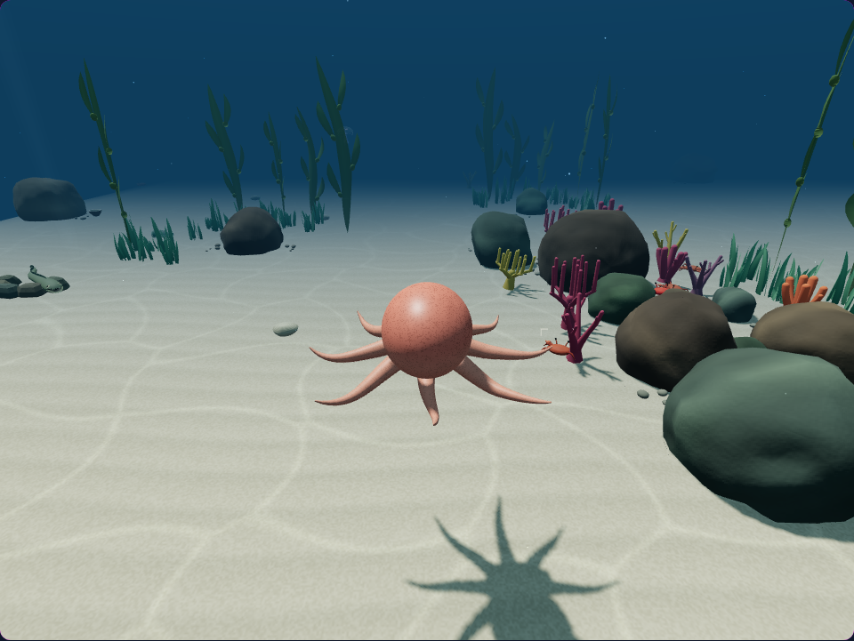
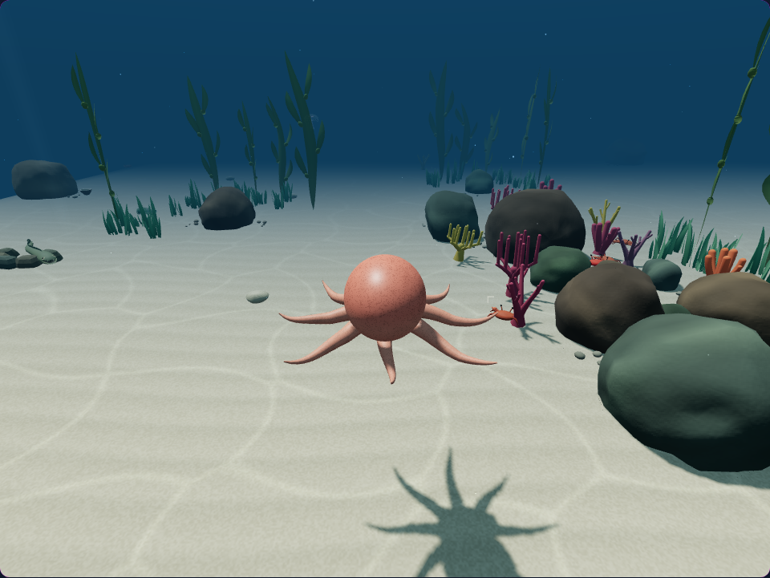
Six reef octopuses now sweep their arms into a flowing boost, then gently unfurl. Continuous breathing and gait rhythms give the transition a softer, more connected feel.
Step through the same boost before and after the improvement. These are key frames captured from real controls at fixed simulation times.
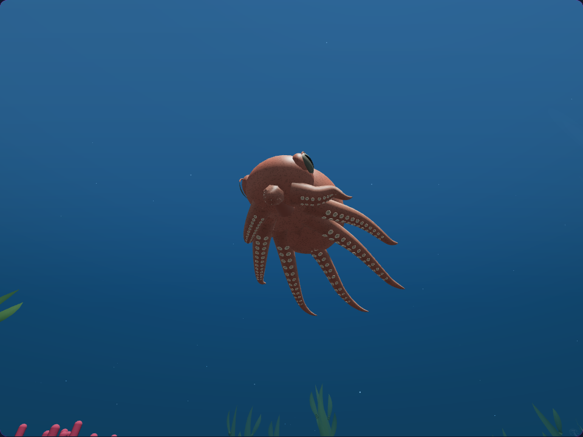
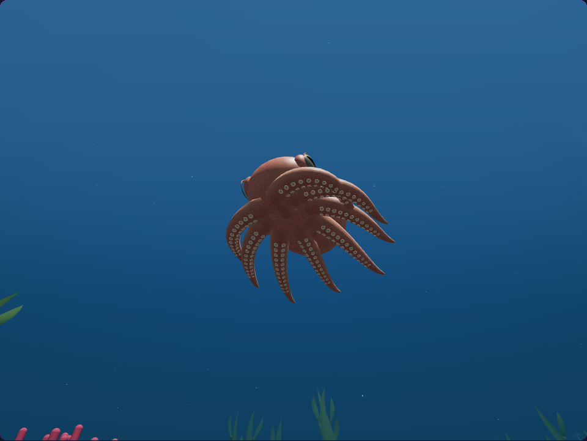
Use the arrow keys on the timeline. The underside camera follows the live animal so the arm curves and suckers stay visible.
Additional boost views from the desktop and phone control checks.
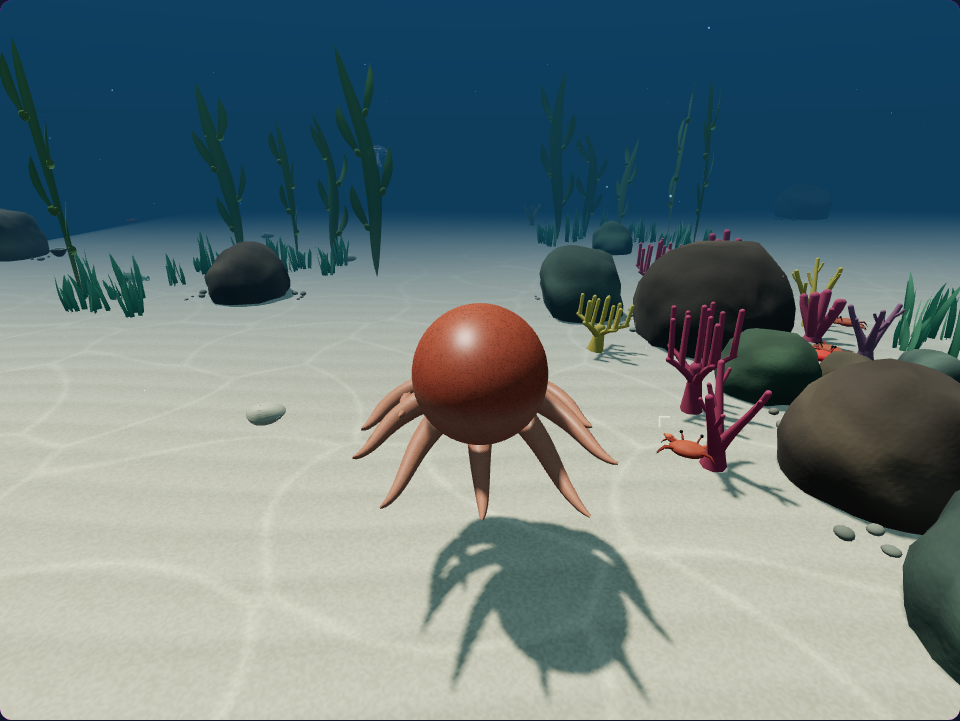
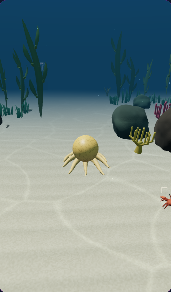
The normal dive camera and a closer look at the boost. Each pair uses matching controls, camera, and world state.



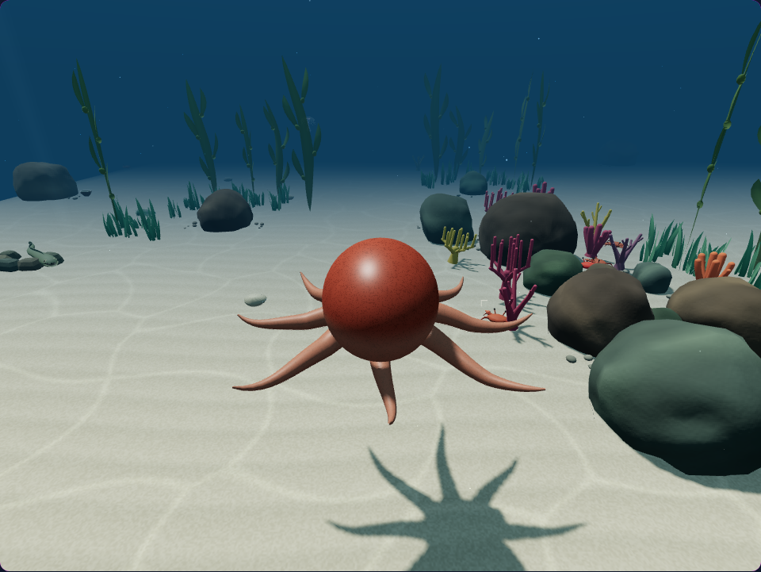
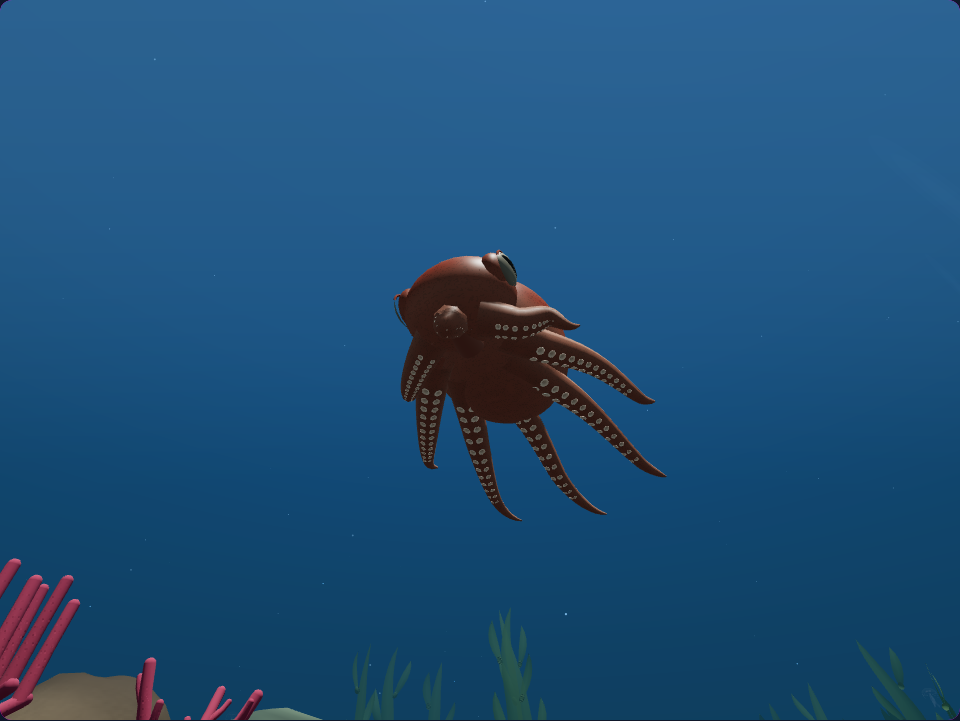
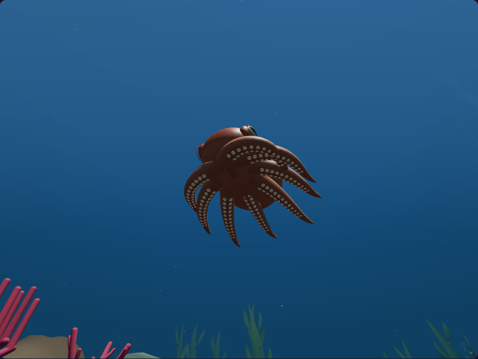

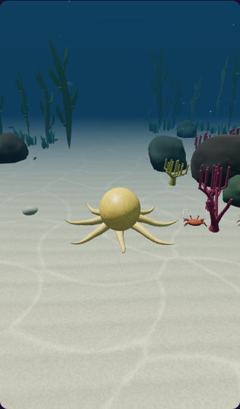
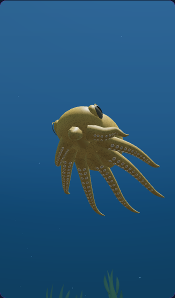
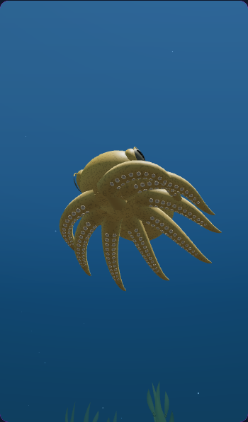
276 targeted tests and nine native browser checks passed. They cover continuous motion, squeezed poses, sucker attachment, webbing, desktop and phone rendering, pause, inspection, reduced motion, targeting, and resource cleanup.
The existing geometry and materials are reused. Swimming speed, stamina, strike rules, and the other six swimming species retain their behavior.
This is procedural animation; arm collisions are not physically solved. Phone checks use a browser viewport rather than a physical handset. Validation details.